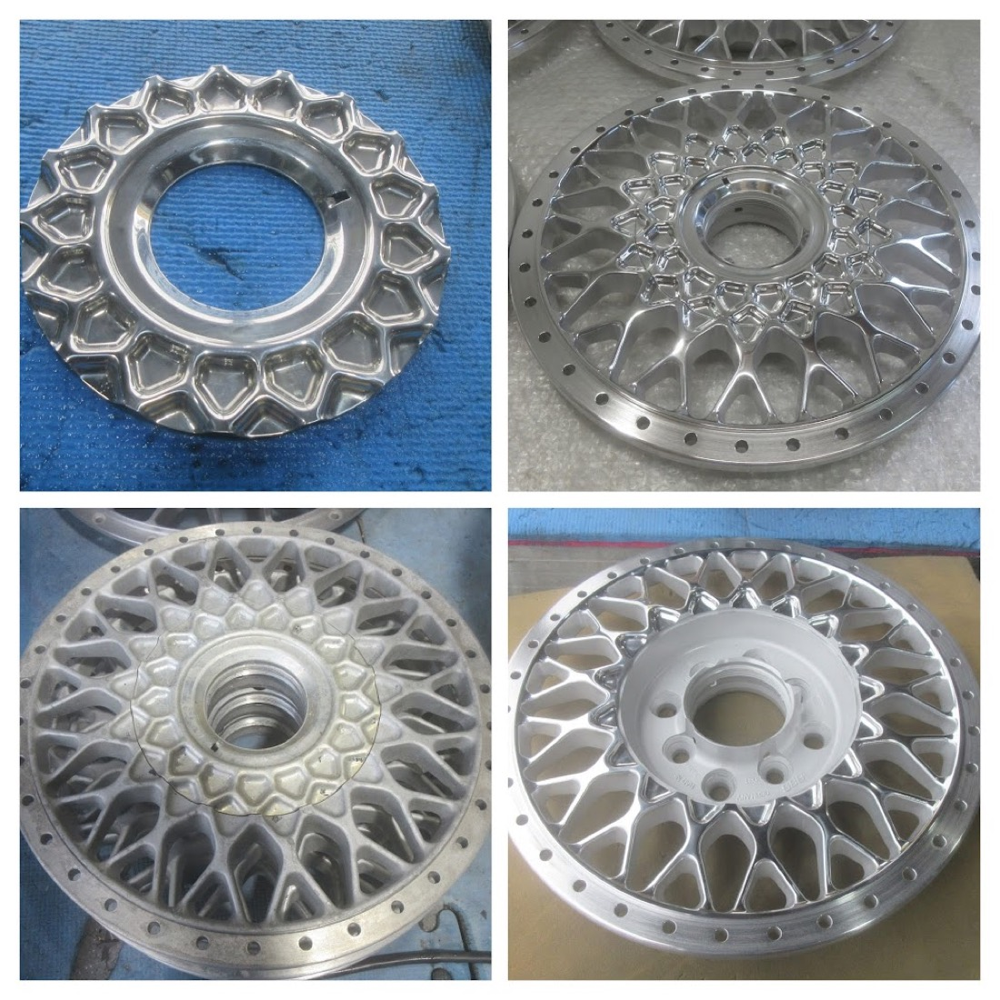
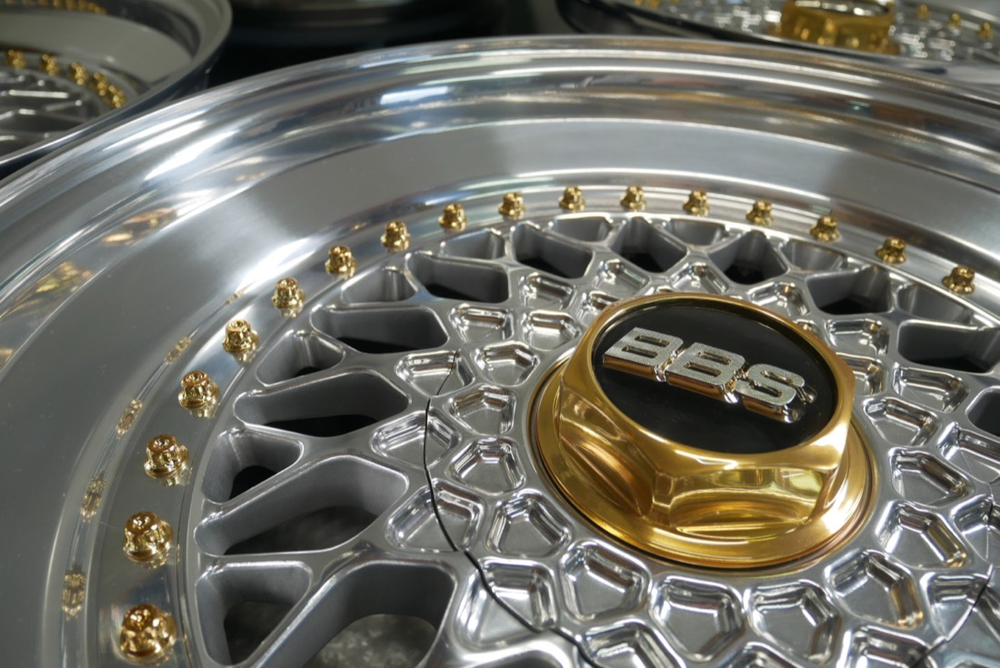
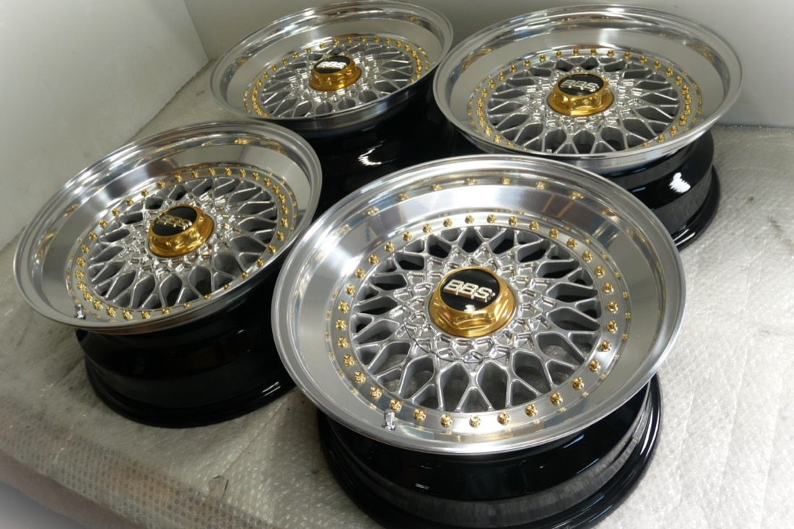
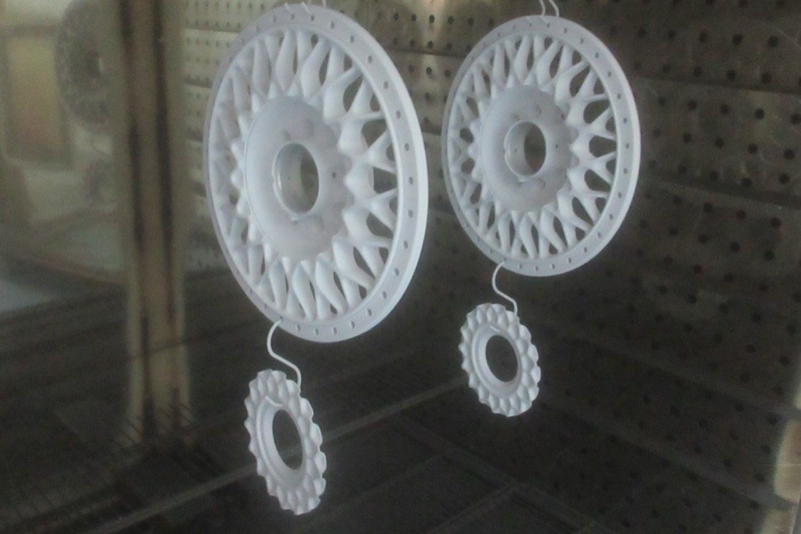

ホイール修正
曲り・ガリ傷・割れ・欠けを、洗浄からプレス修正・アルミ肉盛り溶接・研磨形成まで、工程を踏んで確実に修復します。
二輪・四輪、メーカーや素材を問わず対応します。基本となる修正の確かさがあってこそ、磨き・塗装の美しさが生きる。約80種の加工メニューを、この三本柱でご案内します。

曲り・ガリ傷・割れ・欠けを、洗浄からプレス修正・アルミ肉盛り溶接・研磨形成まで、工程を踏んで確実に修復します。

特許取得のバレル研磨機によるミラーポリッシュ、パウダーコート、各種メッキ。くすんだ一本を新品を超える輝きへ。

BBSのリバレル・インチアップ、旧車・絶版ホイールの復元、カラーチェンジ。図面のない一本物を世界に一本に仕立てます。
速さや安さではなく、仕上がりで選ばれてきました。遠方から当社までご依頼いただくのには、理由があります。
昭和63年創業。ホイール修正を土台に、研磨・塗装・メッキまで一貫して自社で対応します。
特許を取得したバレル研磨機・バフ研磨機をはじめ、塗装ブース・焼付け釜まで自社工場に完備。
発送でのご依頼に全国対応。4本のリフレッシュ・リメークは往復送料無料です。
損傷も素材も一本ずつ違うため、すべて手作業。状態を見極めて最適な工程を組み立てます。
見た目だけを整える速攻修理は行っていません。あたりまえの工程を省かず積み重ねることが、確実な修復と美しい仕上がりへの近道です。

自社工場の静電粉体塗装（パウダーコート）納期の目安：単品修正で約1週間、4本のリフレッシュ・リメークで2〜3週間。一本ずつのワンオフ手作業のため、損傷状態と受注状況により前後します。
最新の施工例「BBS-RS 16⇒17インチ リバレル＋バレル研磨フルポリッシュ」より。日々の仕上がりはブログで随時公開しています。
※ 掲載写真はすべて当社の実際の施工例です（現サイト施工ブログより）。
「量より質」と言いますが、「量」をこなさないと「質」は向上しません。
長年の経験こそが、信用と信頼、安心へと繋がります。
料金だけで選ぶと、仕上がりも値段なりになります。高度で特殊な技術を要するホイール修正・リフレッシュは、職人の経験とノウハウで品質が大きく変わる仕事です。
有限会社オートサービス西 代表西 昌則来店は不要です。スマホで撮った写真から、修正の可否・仕上がりイメージ・概算金額と納期をご案内します。
傷や全体の状態がわかるように数枚。裏リムや刻印が写っているとより正確にご案内できます。
ホイールのメーカー・サイズ・ご希望の仕上がりを添えて送信。24時間受け付けています。
概算金額・納期・発送方法をご返信します。内容にご納得いただいてから作業を開始します。
写真を送るだけ。見積もりは無料です。
「これは直るのか？」の段階でも、お気軽にご相談ください。
無料見積もりを依頼するお電話でも受け付けています 0995-65-7225（9:00〜19:00 日祝休）
| 会社名 | 有限会社オートサービス西 |
|---|---|
| 所在地 | 〒899-5652 鹿児島県姶良市平松7366-4 |
| 電話 | 0995-65-7225 |
| FAX | 0995-66-4606 |
| 営業時間 | 9:00〜19:00 |
| 定休日 | 日曜・祭日 |
| 創業 | 昭和63年（1988年） |
ご来店いただかなくても、全国どこからでもご依頼いただけます。